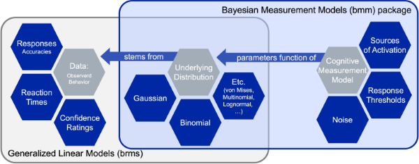

Overview
The goal of the bmm (Bayesian Measurement Models) package is to make it easier to estimate common cognitive measurement models for behavioral research. It achieves this by combining the flexibility of the ‘brms’ package for specifying linear model syntax with custom functions that translate cognitive measurement model into distributional families that can be estimated using Bayesian hierarchical estimation. Cognitive measurement models provide a more refined representation of the cognitive processes underlying observed behavior, because they decompose observed behavior into several theoretically meaningful parameters that each represent distinct cognitive processes.
Available models
Currently the bmm package implements mainly models used in the domain of visual working memory research:
Visual working memory
- Interference measurement model by Oberauer and Lin (2017).
- Two-parameter mixture model by Zhang and Luck (2008).
- Three-parameter mixture model by Bays et al (2009).
- Signal Discrimination Model (SDM) by Oberauer (2023)
However, the setup of the bmm package provides the foundation for the implementation of a broad range of cognitive measurement models. In fact, we are already working on implementing additional models, such as:
- Signal-Detection Models
- Evidence Accumulation Models
- Memory Models for categorical response
If you have suggestions for models that should be added to the package, feel free to create an issue. Ideally this should describe the model, point towards literature that gives details on the model, and if possible link to code that has already implemented the model.
Given the dynamic nature the bmm package is currently in, you can always view the latest list of supported models by running:
bmm::supported_models()
#> The following models are supported:
#>
#> - imm(resp_error, nt_features, nt_distances, set_size, regex, version)
#> - mixture2p(resp_error)
#> - mixture3p(resp_error, nt_features, set_size, regex)
#> - sdm(resp_error, version)
#>
#> Type ?modelname to get information about a specific model, e.g. ?immHow to install bmm
You can install the latest version of the bmm package from CRAN:
install.packages("bmm")Because bmm is based on brms and stan it requires a working C++ compiler. If you have not used brms before, you will need to first install the dependencies. If you are already using brms, you can skip this step.
Install dependencies
Alternatively, you can install the development version of the package or a specific version of the package from GitHub:
Install the latest development version of bmm
if (!requireNamespace("remotes")) {
install.packages("remotes")
}
remotes::install_github("venpopov/bmm")Install the 0.0.1 version of bmm (if following version 6 of the tutorial paper on OSF)
The package was significantly updated on Feb 03, 2024. If you are following older versions (earlier than Version 6) of the Tutorial preprint, you need to install the 0.0.1 version of the bmm package with:
if (!requireNamespace("remotes")) {
install.packages("remotes")
}
remotes::install_github("venpopov/bmm@v0.0.1")Fitting models using bmm
The core function of the bmm package is the bmm() function. This function takes:
- a linear model formula specifying how parameters of the model should vary as a function of experimental conditions
- data containing the dependent variables, the variables predicting model parameters, and potentially additional variables providing information to identify the model
- the model that should be fit
You can get more detailed information on the models implemented in bmm by invoking the documentation of each model typing ?bmmodel into your console. For example, calling the information on the full version of the Interference Measurement Model would look like this:
?immA complete call to fit a model using bmm could look like this. For this example, we are using the oberauer_lin_2017 data that is provided with the package and we will show how to fit the Interference Measurement Model to this data. If you want a detailed description of this model and and in depth explanation of the parameters estimated in the model, please have a look at the IMM article.
library(bmm)
formula <- bmmformula(c ~ 0 + set_size,
a ~ 0 + set_size,
s ~ 0 + set_size,
kappa ~ 0 + set_size)
model <- imm(resp_error = "dev_rad",
nt_features = paste0("col_nt", 1:7),
nt_distances = paste0("dist_nt",1:7),
set_size = "set_size")
fit <- bmm(formula = formula, data = data, model = model)Using this call, the fit object will save all the information about the fitted model. As bmm calls brms to fit the models, these objects can be handled the same way a normal brmsfit object is handled:
You can have a look at examples for how to fit all currently implemented models by reading the vignettes for each model here for the released version of the package or here for the development version.
Exploring measurement models
To aid users in improving their intuition about what different models predict for observed data given a certain parameter set, the bmm package also includes density and random generation function for all implemented models.
These function provide an easy way to see what a model predicts for data given a certain set of parameters. For example you can easily plot the probability density function of the data for the Interference Measurement model using the dimm function. In similar fashion the random generation function included for each model, generates random data based on a set of data generating parameters. For the IMM, you can use rimm to generate data given a set of parameters. Here is an example of how to use these functions. We are ploting a histogram of randomly generated data from the IMM with a setsize of four, and overlaying the probability density function of the model:
library(bmm)
library(ggplot2)
resp <- rimm(
n = 1000,
mu = c(0, -1.5, 2.5, 1),
dist = c(0, 2, 0.3, 1),
c = 1.5, a = 0.3, b = 0, s = 2, kappa = 10
)
hist(resp, freq = FALSE, breaks = 60)
curve(
dimm(x,
mu = c(0, -1.5, 2.5, 1),
dist = c(0, 2, 0.3, 1),
c = 1.5, a = 0.3, b = 0, s = 2, kappa = 10
),
from = -pi, to = pi, add = TRUE
)
The general structure of the bmm package
The main building block of the bmm package is that cognitive measurement models can often be specified as distributional models for which the distributional parameters of the generalized linear mixed model are a function of cognitive measurement model parameters. These functions that translate the cognitive measurement model parameters into distributional parameters is what we implement in the bmm package.

As these function can become complicated and their implementation changes with differences in experimental designs, the bmm package provides general translation functions that eases the use of the cognitive measurement models for end users. This way researchers that face challenges in writing their own STAN code to implement such models themselves can still use these models in almost any experimental design.
Under the hood, the main bmm() function will then call the appropriate functions for the specified model and will perform several steps:
- Configure the Sample (e.g., set up prallelization)
- Check the information passed to the
bmm()function:- if the model is installed and all required arguments were provided
- if a valid formula was passed
- if the data contains all necessary variables
- Configure the called model (including specifying priors were necessary)
- Calling
brmsand passing the specified arguments - Posprocessing the output and passing it to the user
This process is illustrated in the Figure below:

Contributing to the bmm package
Should be interested in contributing a model to the bmm package, you should first look into the Developer Notes as well as the Contributor Guidelines. These give a more in depth description of the package architecture, the steps necessary to add your own model to the package, and how contributions will be acknowledged.